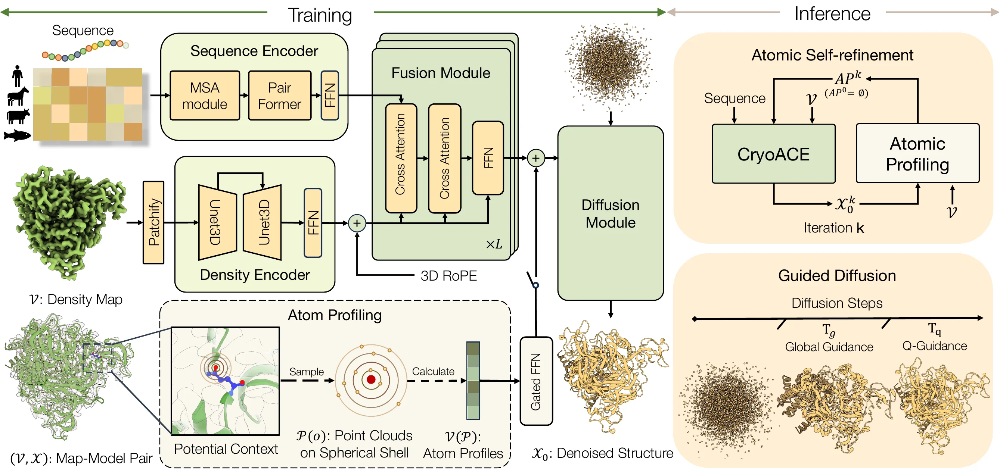
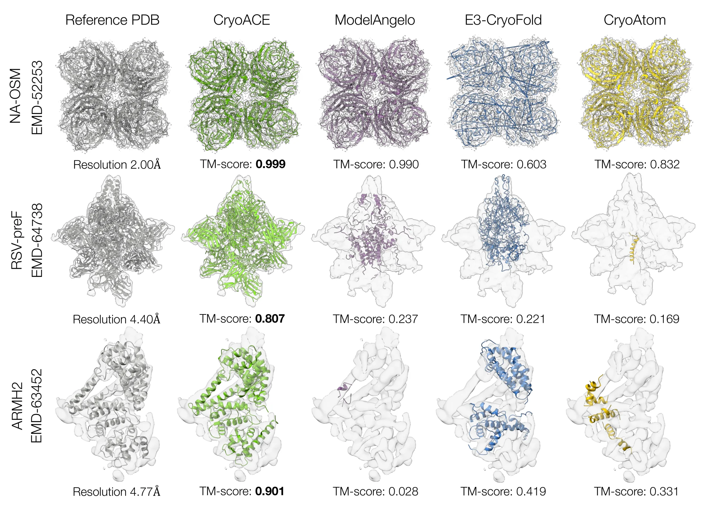
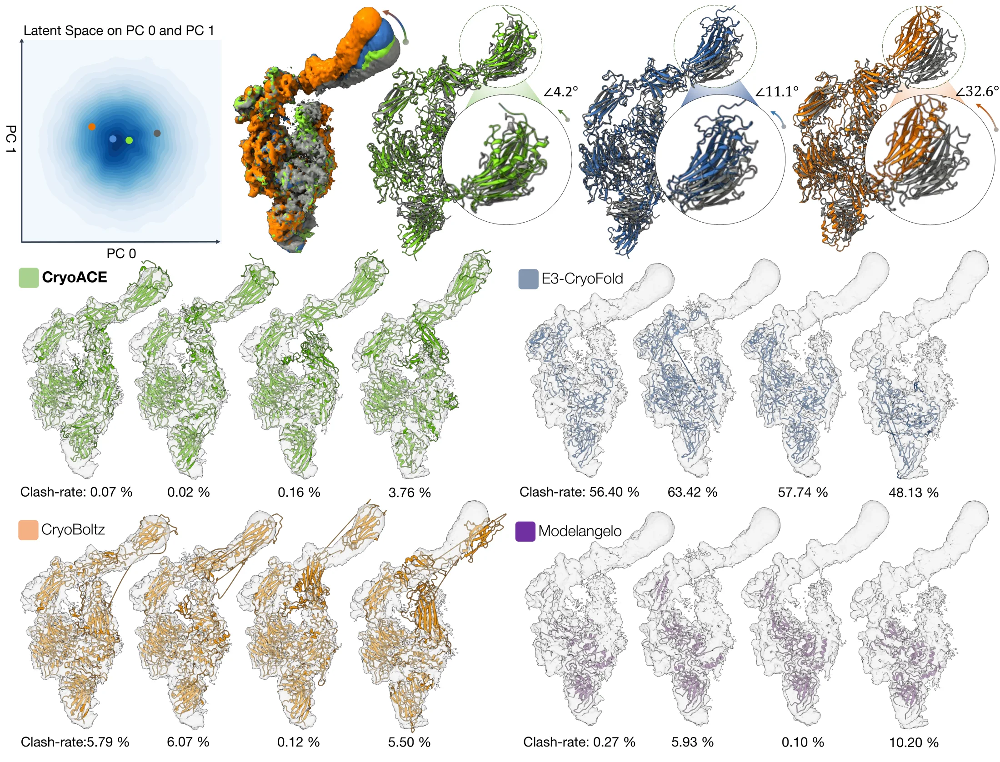

CryoACE: An Atom-centric Framework for Accurate and Automated Model Building in Cryo-EM
ICML 2026
1ShanghaiTech University 2Cellverse Co., Ltd.
TL;DR: CryoACE builds precise atomic models directly from cryo-EM density maps by sampling density features at atom coordinates and using local-resolution-guided inference to recover both static structures and heterogeneous conformational ensembles.

Abstract
Protein automodeling from cryo-EM density maps faces unique challenges in enforcing physicochemical validity and managing conformational heterogeneity. Current solvers are often limited to static predictions or require computationally intensive heuristic searches. We present CryoACE, an end-to-end framework that reconstructs precise atomic graphs for both homogeneous and heterogeneous structures.
Our method features two key innovations: an atom-centric reconstruction paradigm, where density features are sampled directly at atomic coordinates and iteratively recycled to refine structures, replacing expensive voxel convolutions for efficient multimodal fusion; and a training-free guidance mechanism that leverages predicted local resolution priors to resolve dynamic ambiguity. Validated on a newly constructed high-quality dataset, CryoACE significantly outperforms existing baselines on static benchmarks and unveils atomic-level dynamic conformations on complex real-world datasets such as EMPIAR-10345.
Pipeline
CryoACE formulates model building as atom-centric coordinate generation. Density features are queried at predicted atom locations, fused with sequence and structure representations, and recycled to progressively refine the atomic graph. Auxiliary Q-score and local resolution predictions provide model-quality estimates and guide heterogeneous inference.
Homogeneous Model Building

On static cryo-EM benchmarks, CryoACE improves geometric accuracy, completeness, and density agreement compared with existing automated model-building baselines, particularly in noisy or low-resolution maps.
Heterogeneous Model Building

For heterogeneous reconstructions, CryoACE uses predicted local resolution priors to control density guidance and recover atomic-level conformational dynamics without relying on pre-built static structures.
BibTeX
@inproceedings{li2026cryoace,
title = {CryoACE: An Atom-centric Framework for Accurate and Automated Model Building in Cryo-EM},
author = {Li, Minzhang and Li, Mingrui and Qin, Weichen and Chen, Qihe and Shen, Sixian and Pei, Yuan and Zhang, Jiakai and Yu, Jingyi},
booktitle = {Proceedings of the International Conference on Machine Learning},
year = {2026}
}